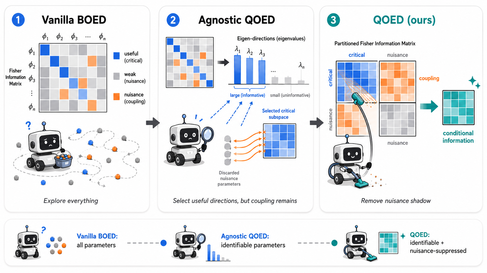

Problem: information-theoretic exploration objectives in robotics are hard to design because many model parameters are weakly observable or unidentifiable, causing standard objectives to overestimate what exploration data can actually teach the system.
Method: QOED (Quasi-Optimal Experimental Design) analyzes the Fisher information matrix to identify learnable parameter directions, then adapts the exploration objective to prioritize those identifiable directions while suppressing nuisance effects from unidentifiable parameters.
Result: QOED provides a theoretically grounded approximation to ideal information-maximizing exploration and improves both exploration efficiency and downstream policy learning, achieving up to 35.23% gains from identifiable-direction selection and 21.98% gains from nuisance suppression across simulated and real-world robotics tasks.

We start from the standard information-gain view of robot exploration: choose a policy that collects data most informative about the hidden parameters.
BOED approximates this objective using the Fisher information matrix. For a trajectory \(\tau\) and parameters \(\phi\), the score \(g = \nabla_{\phi} \log p(\tau \mid \phi, \pi)\) measures how sensitive the observed data is to parameter changes.
Intuitively, the orange term is the nuisance shadow: information in the critical block that can be explained by nuisance directions. QOED subtracts this shadow and optimizes the remaining conditional information.
@inproceedings{
yuRSS26qoed,
title={Learning What Matters: Adaptive Information Theoretic Objectives for Robot Exploration},
author={Youwei Yu and Jionghao Wang and Zhengming Yu and Wenping Wang and Lantao Liu},
booktitle={Proceedings of Robotics: Science and Systems},
year={2026}
}